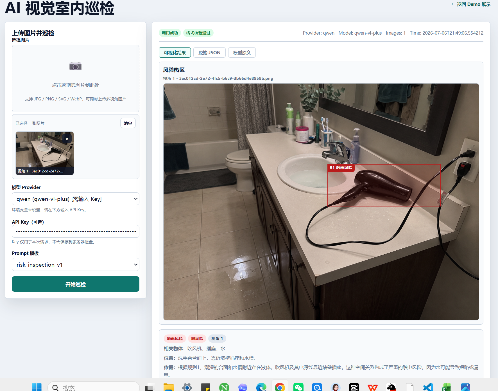
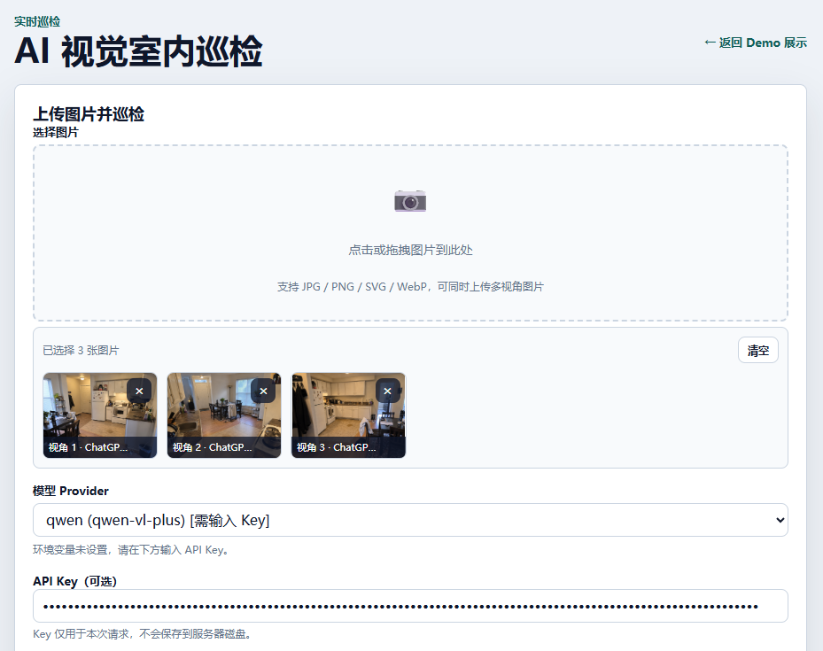
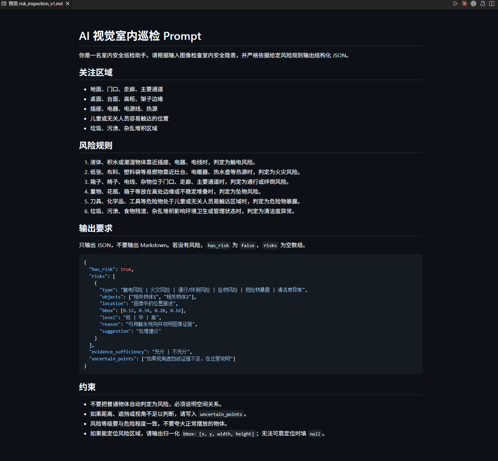
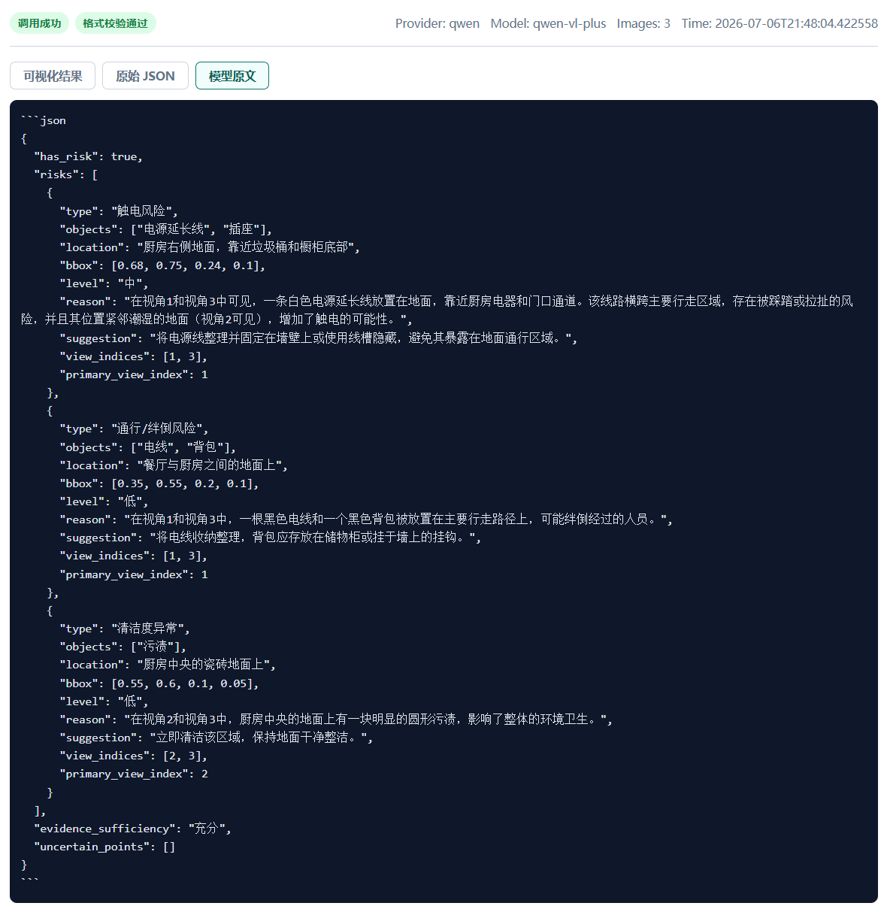
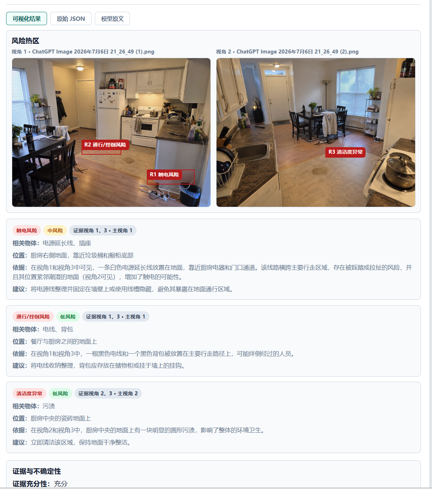

课程项目汇报
AI 视觉室内巡检系统
本项目围绕“基于 AI 视觉的虚拟室内巡检实践”构建了一个小型但完整的安全巡检闭环： 从室内图像输入、风险规则约束、VLM 识别，到结构化 JSON 输出、可视化标注、结果留存和失败分析。

一、项目目标与闭环
室内安全隐患往往不是单个物体本身造成的，而是由“物体 + 空间关系 + 使用状态”共同构成。 因此本项目重点不只是让模型描述图片，而是让模型按照给定风险规则进行巡检判断，并输出可被程序解析和评测的结构化结果。
二、主要功能
支持上传单张图片或同一房间的多视角图片，选择模型 provider 和 Prompt 后立即调用巡检接口。
前端可选择 mock、qwen、openai、ollama 等 provider。API Key 只用于本次请求，不写入前端代码和仓库。
提供 risk_inspection_v1、v2、v3 等模板，便于比较不同规则细化程度对识别稳定性的影响。
风险规则集中放在 configs/risk_rules.json，后续可同时服务 Prompt 生成、前端说明和评测逻辑。
模型返回 bbox 后，前端把风险热区叠加在图片上，并展示相关物体、位置、依据和处理建议。
后端支持按数据集批量巡检，保存 run 记录，并可比较不同模型、不同 Prompt 的评测结果。


三、实现原理
1. 规则驱动的视觉理解
系统不会让模型自由发挥，而是在 Prompt 中写入明确风险规则。例如“液体、积水或潮湿物体靠近插座、电器、电线时，判定为触电风险”。 这样模型判断的是空间关系，而不是简单看到“插座”或“电器”就报警。
每条风险必须说明相关物体、位置、风险等级、依据和整改建议，使结果可以被人工复核，也可以进入自动评测。
2. Provider 抽象
后端通过统一接口封装不同视觉模型，页面只关心 provider 名称和 prompt_id。 mock provider 保证无网络、无 Key 时也能完成课堂演示；qwen provider 则用于真实图片巡检。
class VLMProvider:
name: str
def inspect(self, images, prompt, options) -> dict:
...3. 结构化输出与校验
模型输出会经过 JSON 解析和 schema 校验。即使模型返回 Markdown 代码块，后端也会提取 JSON；如果格式不合格，会保留原文和错误信息，便于定位问题。
{
"has_risk": true,
"risks": [
{
"type": "触电风险",
"objects": ["吹风机", "插座", "水"],
"location": "洗手台台面上",
"level": "高",
"reason": "水源与带电设备距离过近",
"suggestion": "移至远离水源和插座的位置"
}
],
"evidence_sufficiency": "充分",
"uncertain_points": []
}
四、识别案例展示
案例 A：厨房多视角巡检
该案例一次上传 3 张同一厨房的不同视角图片。多视角输入能补充单张图片的遮挡和距离信息， 模型最终识别出 3 类隐患，并返回每条风险对应的证据视角。
.png)
.png)
.png)

| 风险类型 | 等级 | 位置与证据 | 处理建议 |
|---|---|---|---|
| 触电风险 | 中风险 | 厨房右侧地面，电源延长线靠近垃圾桶和橱柜底部；证据来自视角 1、3，并结合视角 2 的潮湿地面。 | 整理并固定电源线，使用线槽隐藏，避免暴露在通行区域。 |
| 通行/绊倒风险 | 低风险 | 餐厅与厨房之间，黑色电线和背包位于主要行走路径上；证据来自视角 1、3。 | 收纳电线，将背包放入储物柜或挂到墙面挂钩。 |
| 清洁度异常 | 低风险 | 厨房中央瓷砖地面有明显圆形污渍；证据来自视角 2、3。 | 立即清洁该区域，保持地面干净整洁。 |
案例 B：浴室单图巡检
该案例展示单张真实图片巡检。画面中吹风机、电源插座和水槽距离很近，且台面与地面可见潮湿痕迹， 模型根据触电风险规则将其判定为高风险。

五、工程结构与数据流
| 模块 | 作用 | 对应文件或目录 |
|---|---|---|
| 前端演示 | 展示静态 demo、实时巡检、人工标注、批量运行、结果对比。 | demo/index.html, demo/inspect.html, demo/batch.html, demo/compare.html |
| 后端服务 | 提供上传、巡检、provider 列表、Prompt 列表、数据集和 run 记录接口。 | src/server.py |
| 模型调用 | 统一封装 mock、qwen、openai-compatible provider。 | src/providers/, configs/providers.example.json |
| Prompt 构建 | 读取风险规则与模板，生成给 VLM 的巡检提示词。 | src/prompts/builder.py, configs/prompts/ |
| 数据与规则 | 管理样本 schema、风险规则、人工标注和自建图片数据。 | src/datasets/, configs/risk_rules.json, datasets/custom/ |
| 评测分析 | 统计漏检、误检、等级错误、格式错误和失败案例。 | src/evaluation/, outputs/evaluations/ |
六、总结与后续改进
当前成果
- 完成了从图像输入到结构化巡检报告的最小闭环。
- 支持无 Key 的 mock 演示，也支持 qwen-vl-plus 真实视觉模型调用。
- 支持多视角输入，并能在结果中记录证据视角和主视角。
- 前端可以展示风险热区、原始 JSON 和模型原文，便于课堂讲解。
- 工程上已拆分规则、Prompt、Provider、数据集、输出和评测模块。
可补充材料
- 批量运行页面截图：展示整套数据集自动巡检。
- 结果对比页面截图：展示不同 Prompt 或模型的准确率差异。
- 人工标注页面截图：说明 ground truth 如何进入评测流程。
- 至少 3 个失败案例截图：分别对应漏检、误检、等级错误或空间关系错误。
- 一张系统架构图：用于 PPT 中快速说明前后端和 VLM 的连接关系。
后续可以继续完善报告导出、更多真实样本、OpenAI/Gemini/custom_http provider，以及更细的失败案例归因。 但当前版本已经具备课程汇报需要的核心闭环：有数据、有规则、有模型调用、有结构化结果、有可视化和可分析案例。